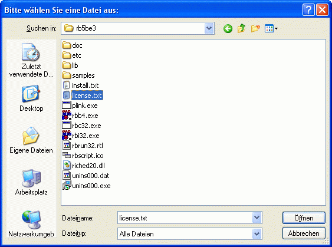

OPENBOX, SAVEBOX
OPENBOX, SAVEBOX
OPENBOX, SAVEBOX
OPENBOX, SAVEBOX
| Syntax: | OPENBOX Datei = Dialogtitel, Filter SAVEBOX Datei = Dialogtitel, Filter |
| Beschreibung: | OPENBOX zeigt einen Standarddialog zum Öffnen einer Datei an. SAVEBOX zeigt einen Standarddialog zum Speichern einer Datei an. Als Parameter benötigen beide Funktionen einen Dialogtitel sowie einen Dateifilter, der wie folgt definiert wird: Filterbezeichnung|Filter Beispiel für einen TXT-Dateifilter wäre: "Textdateien|*.txt". Um mehrere Filter zur Verfügung zu stellen (diese können im Dialog vom Benutzer ausgewählt werden) lassen sich die einzelnen Filterelemente einfach hintereinander schreiben: "Textdateien|*.txt|Word-Dateien|*.doc" ... Um mehrere Filter unter einem Namen zu verwalten, spezifizieren Sie den Filter wie folgt: "Ausführbare Dateien|*.exe;*.com;*.bat". Rückgabewert der Funktion ist der komplette Dateiname mit Pfad, wenn der Benutzer eine Datei doppelt geklickt oder einen Dateinamen ausgewählt und OK gedrückt hat. Hat der Benutzer Abbrechen oder den Schlieflen-Button des Dialogs gewählt, so wird ein Leerstring zurückgegeben.  |
| Beispiele: | openbox [dateiname] = 'Bitte Datei wählen!', 'Alle Dateien (*.*)|*.*' if [dateiname] ! '' echo 'Der gewählte Dateiname lautet: ' # [dateiname] else echo 'Keine Datei ausgewählt.' endif |
| Bemerkungen: | Wenn Sie die vordeklarierte Variable [OpenBox_MultiSel] (bei OPENBOX) bzw. [SaveBox_MultiSel] (bei SAVEBOX) auf den Wert 0 setzen, können in dem jeweiligen Dialog mehrere Dateien ausgewählt werden. Ist dies der Fall, ist der Rückgabewert eine Liste, beginnend mit dem Pfadnamen und den einzelnen Dateien, jeweils durch Pipe-Zeichen (|) getrennt. Das Pipe-Zeichen (|) ist der Standard-Separator zum Trennen von Listenelementen in einem String. Dieser kann über die Variable [std_sep] geändert werden, was dann für alle Listen, die von RapidBATCH verarbeitet werden, gilt. |